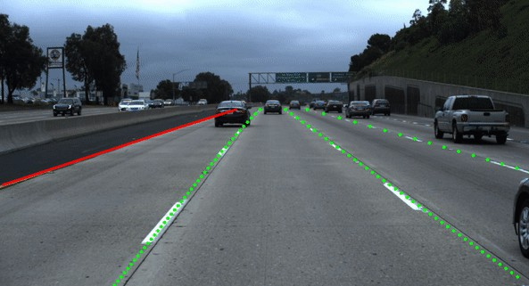

About Me
Software Developer & Student
I'm currently a Student studying Computer Science at Edith Cowan University majoring Software Engineering. I previously have completed a Certifcate IV and Diploma in IT after year 11 to pursue an interest in Information Technology to learn professionalism in the IT workplace and practical skills such as web development, cisco routing and virtualisation (server installations). Currently on progress to develop new technical capabilities to further educate myself to become a software developer professional. Summary of skills such as:
- Programming languages: Python, C#, C++, Lua, SQL, PHP, HTML/CSS/Javascript
- Server installation, network setups and manage services: Domain Accounts, Email Setups, Backup schedules, Cisco routing and Secure SOHO wireless modems.
- Training courses ongoing: AWS/Azure Cloud, Software Testing, iOS development, Unity Development, Website Development
Photography
Disney
Started in January and ended in March 2020 (terminated program due to COVID-19 panademic), I have the opportunity to not only visted Walt Disney World as a guest/tourist but also I was employed by Disney to partipcate in a Cultural Exchange to represent for Australia/New Zeland to undertake mutlicultural experience that I always want to see the USA one day.
This place was taken in a theme park called Hollywood Studios and in the theme area known as Star Wars: Galaxy's Edge. Popular tourist destination for those who loves Star Wars and within Hollywood Studios; there amazing themes that it has to offer such as Toy Story, Mickey Mouse and Indiana Jones.
World of Disney is the main shop center for all tourists where they can purchase a whole range of merchanise such as plush toys, clothes, pins and other amazing products that Disney has to offer. Located in Disney Springs.
The main center entrance for entering the infamous Magic Kingdom where all tourists visted one of the greatest enterainment venue in the world located at Magic Kingdom park. Did you know that 55K+ tourists from all around the world visited Magic Kingdom daily?
Main Street USA
Performance held in Main Street (Magic Kingdom) showcasing the art and history about the original Main Street.
Polynesian Village Resort
One of the 8 luxury hotels throughout Disney that I worked for as a Merchandiser serving guests to assist their equiries about Merchanise working either in BouTiki (mainy Merchanise) or Moana Mercantile (snack store).
Magic Kingdom Night Show
Every night finishes off with the Magic Kingdom castle display for every guest to experience magical moments within Walt Disney World.
Tokyo City University Buddy Program
Volunteered to represent as an ECU buddy for TCU (Tokyo City University) students to learn and experience the lifestyle of Australia. ECU conducts activities for TCU to engage in learning about the Australian Culture and visited majority of attractions that ECU has to offer. Program taken in 2019 from August to October.
Scitech, discovering and practically engaging activities that TCU students are able to interact with.
Fremantle tower taken with my current TCU group and with my ECU leader for this group. Showcase one of the most popular tourist suburb to visit around Fremantle.
TCU learning about how important Australia's culture is respected by the land of Aboriginal and Torres Strait Islanders that were originated by ancestors.
Resume
Education
Bachelor of Computer Science majoring in Software Engineering
2018 - 2021
Edith Cowan University, Joondalup, WA
Currently an ECU student and about to be completed by mid 2021.
Certifcate IV and Diploma in Information Technology
2017
North and South Metropolitan TAFE, Midland & Thorline, WA
Undergone practical training to develop IT knowledge. Developed skills such as server administration/services, cisco routing from small to complex networks in a virtual environment, hosting websites (IIS or x10hosting) and web development.
WIL Experience
Computer Scientist Intern - CSBP
2020 - 3 months
Kwinana, WA
ECU Work Integrated Experience project to develop and consolidated two iOS applications designed for Agronomy purposes. Successfully consolidated and improve Nitrogen Calculator and Flexi-N into a single application known as CSBP InField.
Duties and achievements include:
- Configure and tested Visual Studio App Center to distribute 50 internal stakeholders for iPad devices. Improve user experience instead of using an excel spreadsheet from Nitrogen Calculator, transition into an iOS app for user efficiency.
- Improved UI and statistics by displaying relevant information, implemented a save functionality, designed the app to match CSBP colour scheme and managed more than 10K lines of code for regular maintenance.
- Document version control changes to Azure DevOps for Git repo management.
Coding Projects
Results Management System
Source Code
Successfully completed a student management system based on 2 main accounts within a Rapid Application Development. This project requires to implement C# coding, Database (Microsoft SQL Server) and ASP.NET framework to develop the web application.
Detect Lanes for Self-Driving Cars
Source Code
Developed a Python Computer Vision program to understand how data science packages are valuable to understand how Computer Vision detech car lanes by showcasing in a video format.
Java Snake Game
Learning and applying Java knowledge into a game based environment by creating a Snake.
Videos
Results Management System
Videos (windows or mac)
Login either as an admin or manager account. The manager can either add, edit or delete a student's account. The Manager can also modify the student's score results and can be searched based on a query result/s. The Admin only allow to add, modify or delete a unit.
Detect Lanes for Self-Driving Cars
Reference
Use the module OpenCV to detect lanes within a jpeg picture by coding in Python. Data Science project requring Machine Learning knowledge to implement this project. Currently learning how to develop this project.
Java Snake Game
Reference
Learning and applying Java knowledge into a game based environment by creating a Snake.